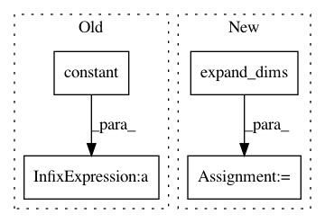

87d7376cf534ee003846621bcf5f12bee241f2ab,poem/core/keypoint_utils.py,,randomly_rotate_and_project_3d_to_2d,#Any#Any#Any#Any#Any#Any#Any#,596
Before Change
[-1.0, 0.0, 0.0],
[0.0, 1.0, 0.0],
])
default_center = tf.constant([0.0, 0.0, default_camera_z])
operator = tf.linalg.LinearOperatorFullMatrix(default_rotation_to_camera)
keypoints_3d = operator.matvec(keypoints_3d) + default_center
// Project to 2D.
return keypoints_3d[Ellipsis, :-1] / tf.math.maximum(1e-12, keypoints_3d[Ellipsis, -1:])
After Change
minval=normalized_camera_depth_range[0],
maxval=normalized_camera_depth_range[1],
seed=seed)
normalized_camera_depths = tf.expand_dims(normalized_camera_depths, axis=-1)
default_centers = tf.stack([
tf.zeros_like(normalized_camera_depths),
tf.zeros_like(normalized_camera_depths),
normalized_camera_depths,
],
axis=-1)
keypoints_3d += default_centers
// Project to 2D.
return keypoints_3d[Ellipsis, :-1] / tf.math.maximum(1e-12, keypoints_3d[Ellipsis, -1:])
In pattern: SUPERPATTERN
Frequency: 3
Non-data size: 4
Instances
Project Name: google-research/google-research
Commit Name: 87d7376cf534ee003846621bcf5f12bee241f2ab
Time: 2021-03-17
Author: liuti@google.com
File Name: poem/core/keypoint_utils.py
Class Name:
Method Name: randomly_rotate_and_project_3d_to_2d
Project Name: reinforceio/tensorforce
Commit Name: 62cea7fcfcc9e20b784e08bddce5dc69b9578ef4
Time: 2019-01-05
Author: alexkuhnle@t-online.de
File Name: tensorforce/core/memories/latest.py
Class Name: Latest
Method Name: tf_retrieve_sequences
Project Name: reinforceio/tensorforce
Commit Name: 62cea7fcfcc9e20b784e08bddce5dc69b9578ef4
Time: 2019-01-05
Author: alexkuhnle@t-online.de
File Name: tensorforce/core/memories/replay.py
Class Name: Replay
Method Name: tf_retrieve_sequences